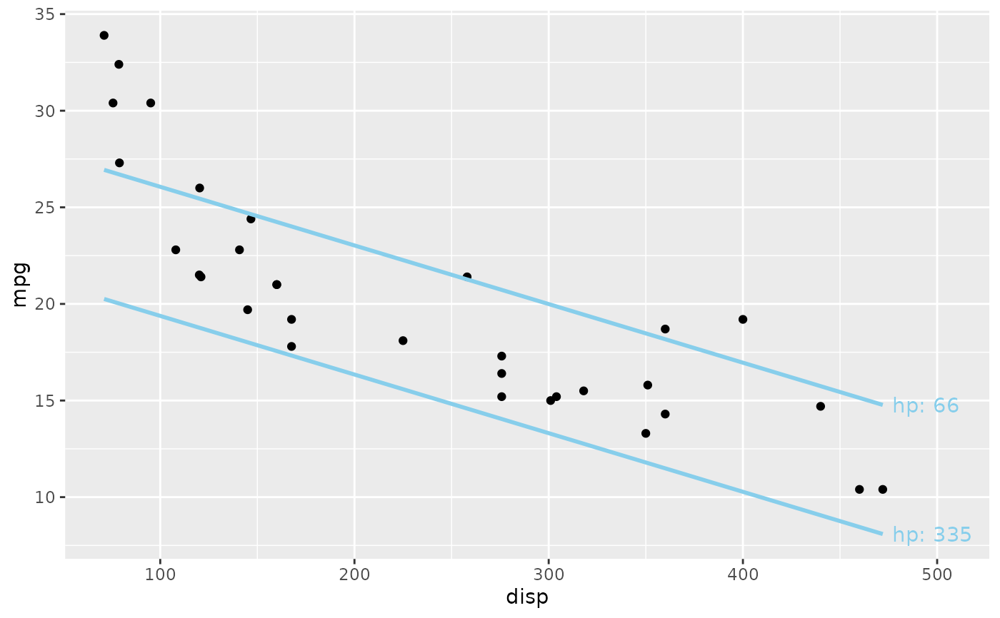
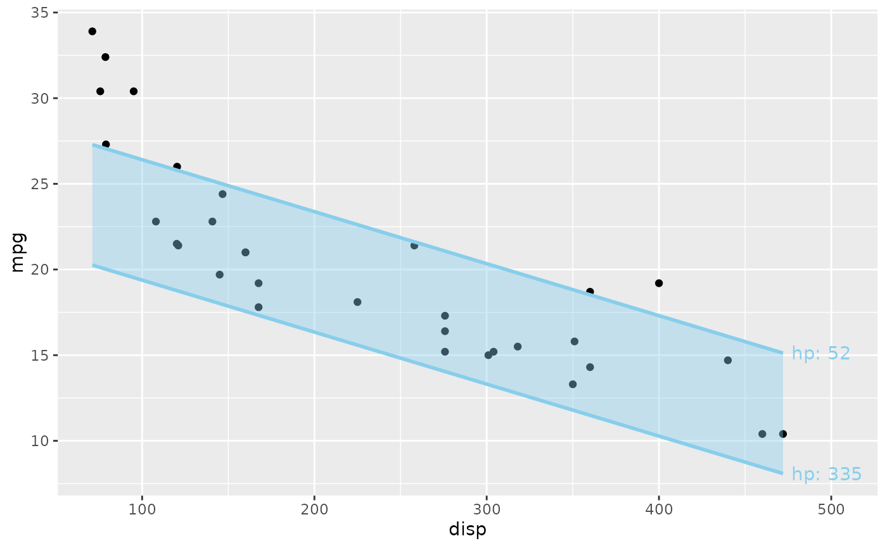

geom_slice_text() writes a text label at the end of each line drawn by
the plot's geom_slice() layers. Multi-value predict_vars draw visually
identical lines with nothing distinguishing them; labels fix that, and
double as a legend replacement for grouping aesthetics.
Usage
geom_slice_text(
style = "variable",
location = "right",
offset = 5,
hjust = NULL,
vjust = NULL,
color = NULL,
expand = TRUE
)Arguments
- style
How to write the labels:
"variable"(default) writes"x2: 0";"value"writes the bare"0";"legend"writes bare values plus a key in the panel's top-right corner naming the variables ("labels: x2; x3").- location
Which end of the line to label:
"right"(default) or"left".- offset
Gap between the line end and the label edge, in points (default 5). The gap is constant regardless of label text, axis range, or plot size.
- hjust, vjust
Manual text justification. Default
NULLanchors the label at the line end, displaced byoffset; settinghjustyourself disables the automatic offset entirely.- color
Label color. Default
NULLinherits each line's color.- expand
If
TRUE(default), widen the x-range on the label side so the labels fit (plus y-headroom for the"legend"key).FALSEleaves the scales alone. Only the expansion is touched: ascale_x_*()you set yourself keeps its limits, breaks, name and transform, and an expansion you set on the side away from the labels is kept as well. The room reserved is the widest label's drawn width measured against the panel's own width, taken from the graphics device open when the layer is added; a plot re-sized much narrower afterwards may still clip. Labels needing more than half the panel are clipped with a warning rather than crowding out the data.
Details
It takes no model or predict_vars — everything is borrowed from the
plot's existing geom_slice() layers, so add it after them. Labels
describe the predict_vars values ("x2: 0", joined with "; " when
several variables are crossed); when the slice layer has no predict_vars,
labels describe the grouping aesthetic instead ("g: A"). Each label
inherits its line's color.
See also
geom_slice() for the layers being labeled;
geom_slice_subtitle() / geom_slice_caption() to describe the slice
in the plot's text instead.
Examples
library(ggplot2)
# Two visually identical lines, told apart by their labels
model <- lm(mpg ~ disp + hp, data = mtcars)
ggplot(mtcars, aes(disp, mpg)) +
geom_point() +
geom_slice(model, predict_vars = list(hp = c(66, 335))) +
geom_slice_text()

# A projection band, labeled on each edge
ggplot(mtcars, aes(disp, mpg)) +
geom_point() +
geom_slice(model, band = TRUE) +
geom_slice_text()
#> Band range for `hp` not specified - used the min/max data range: 52 to 335.
#> To choose the range, use 'predict_vars = list(hp = c(52, 335))'.
